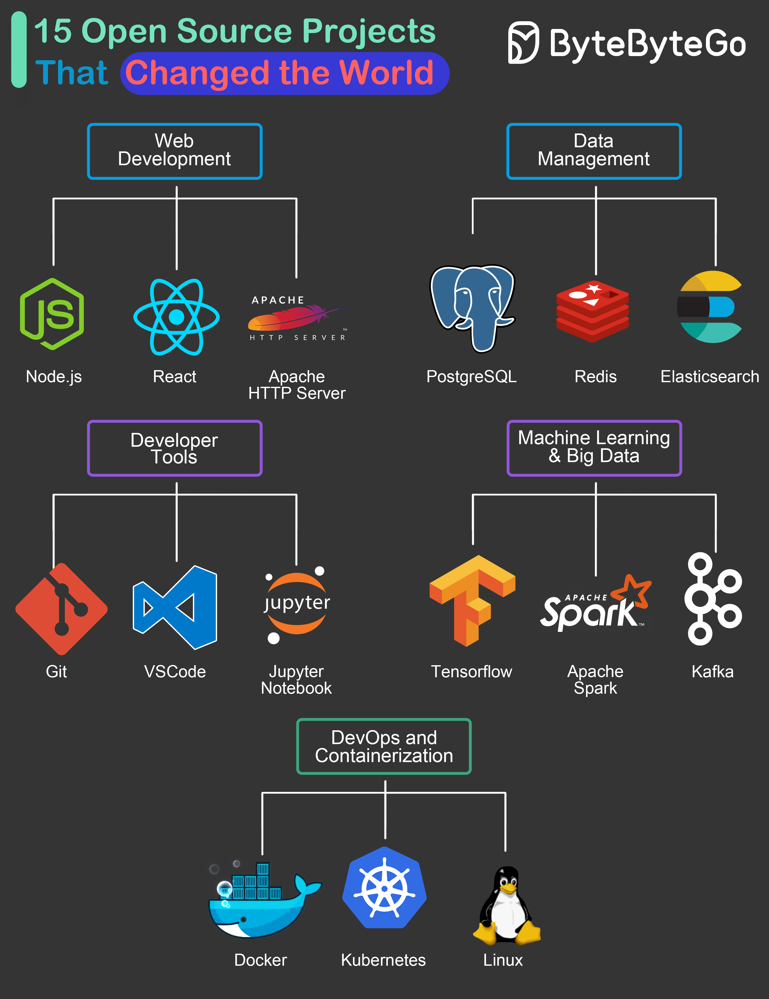

Por qué el open source cambió la industria tech
autor: Lolito Fernandez Categoria: Programacion
¿Qué es el open source?
El open source, o código abierto, se refiere a software cuyo código fuente está disponible para que cualquiera pueda verlo, modificarlo y distribuirlo. Esto ha permitido una colaboración masiva entre desarrolladores de todo el mundo, lo que ha llevado a la creación de herramientas y tecnologías innovadoras.
"El open source ha sido un catalizador para la innovación en la industria tecnológica, permitiendo a los desarrolladores compartir conocimientos y construir sobre el trabajo de otros."
Linus Torvalds, creador de Linux
Impacto en la industria tech
El open source ha democratizado el acceso a la tecnología, permitiendo que pequeñas empresas y desarrolladores individuales puedan competir con grandes corporaciones. Además, ha fomentado la transparencia y la seguridad, ya que el código abierto puede ser revisado por cualquier persona, lo que ayuda a identificar y corregir vulnerabilidades de manera más rápida.

Ejemplos de proyectos open source
Algunos ejemplos destacados de proyectos open source incluyen el sistema operativo Linux, el servidor web Apache, el sistema de gestión de bases de datos MySQL y el sistema de control de versiones Git. Estos proyectos han sido fundamentales para el desarrollo de la infraestructura tecnológica moderna.